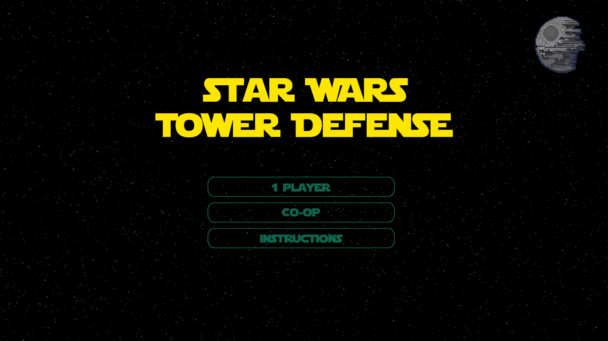

Mad Lowes
Profile
ChoiceMaker
Straws
Tower Defense
Luis Juan Sanchez Padilla
click my face for Bio
More About Luis
Luis Juan Sanchez Padilla
Mexico
Skills:
Javascript
C++
Java
Git
Windows
OSX
Linux
Bio:
This is me
Go to ChoiceMaker
Go to Straws
